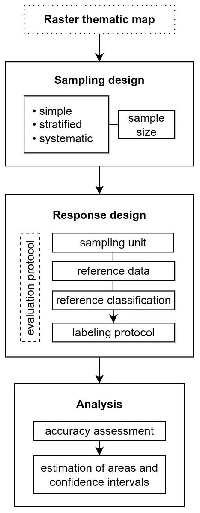

AcATaMa#
Thematic maps are essential tools for understanding and managing land-cover and land-use change. However, their effectiveness depends on map accuracy, which is critical to environmental monitoring, resource management, and policy making. The accuracy assessment of raster thematic maps involves a rigorous process of sampling, response design, and analysis to ensure that maps accurately reflect true conditions on the ground.
AcATaMa is a QGIS plugin designed to provide comprehensive support for accuracy assessment and sample-based area estimation of raster thematic maps. The plugin enables users to comply with international standards and best practices in accuracy assessment, integrating three fundamental components: sampling design (supporting simple random, stratified random, and systematic sampling), response design (providing a multi-window interface for reference data interpretation), and analysis (generating error matrices, accuracy metrics, and area-adjusted estimates with uncertainty quantification).
The Three Components#
The accuracy assessment of thematic maps consists of three key components: sampling design, response design, and analysis. AcATaMa integrates these components through a structured, sequential workflow.
{kind=link}
1. Sampling Design#
The sampling design determines how sample units are selected to ensure representativeness and statistical validity [Stehman and Czaplewski, 1998]. A well-structured sampling design is essential for producing unbiased accuracy estimates and reliable area estimates.
2. Response Design#
The response design involves defining the procedures for obtaining and interpreting reference classifications, ensuring that the comparison between map and reference data is reliable [Olofsson et al., 2014]. It encompasses the protocols and methodologies used to determine the reference or “true” classification of sampled units.
3. Analysis#
Analysis involves quantifying accuracy through error matrices and statistical metrics and estimating class areas with confidence intervals, ensuring scientifically rigorous conclusions [Stehman and Czaplewski, 1998, Olofsson et al., 2014].
Note
Each component is explained in detail in the following pages.
Modular Usage#
Although AcATaMa is designed to follow a sequential three-step workflow for accuracy assessment, the sampling and response design modules can also be used independently for other purposes:
Sampling design: Can be used alone to generate random samples for establishing field plots
Response design: Can be used alone to assign reference labels to point layers using multi-source remote sensing and ancillary geospatial data